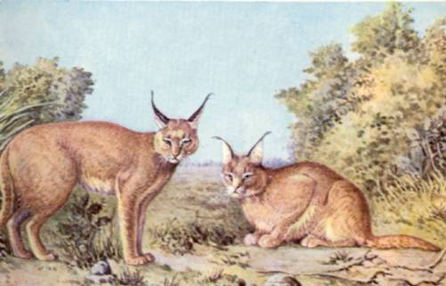

<head>
<meta http-equiv="Content-Type" content="text/html; charset=windows-1252">
<meta name="GENERATOR" content="Microsoft FrontPage 4.0">
<meta name="ProgId" content="FrontPage.Editor.Document">
<title>New Page 1</title>
<meta http-equiv="Content-Type" content="text/html; charset=windows-1252">
<meta name="GENERATOR" content="Microsoft FrontPage 4.0">
<meta name="ProgId" content="FrontPage.Editor.Document">
<title>ECONOMICALLY IMPORTANT PLANTS OF INDIA compiled by K</title>
<meta http-equiv="Content-Type" content="text/html; charset=windows-1252">
<meta name="GENERATOR" content="Microsoft FrontPage 4.0">
<meta name="ProgId" content="FrontPage.Editor.Document">
<title>ECONOMICALLY IMPORTANT PLANTS OF INDIA</title>
<meta http-equiv="Content-Type" content="text/html; charset=windows-1252">
<meta name="GENERATOR" content="Microsoft FrontPage 4.0">
<meta name="ProgId" content="FrontPage.Editor.Document">
<title>New Page 1</title>
<META HTTP-EQUIV="CONTENT-TYPE" CONTENT="text/html; charset=windows-1252">
<TITLE>Aegle marmelos </TITLE>
<META NAME="GENERATOR" CONTENT="Microsoft FrontPage 4.0">
<META NAME="CREATED" CONTENT="20010726;17265013">
<META NAME="CHANGEDBY" CONTENT="L.Sowmya">
<META NAME="CHANGED" CONTENT="20020726;13003551">
<META NAME="DESCRIPTION" CONTENT="Economically Important Plants">
<META NAME="KEYWORDS" CONTENT="Abies pindrow">
<META NAME="ProgId" CONTENT="FrontPage.Editor.Document">
<STYLE>
	<!--
		P { color: #2c9a97 }
	-->
	</STYLE>
<meta name="Microsoft Theme" content="none">
<link>
</head>

<body LANG="en-US" bgcolor="#CCCCCC" text="#009999">
<P><A NAME="begin"></A>
</P>
<table border="1" width="100%">
  <tr>
    <td width="100%" bgcolor="#1658BC">
      <P ALIGN=CENTER><b><font face="Verdana" size="6" color="#FFFFFF">Digitized
      Inventory of Animal Resources: Mammalia&nbsp;</font></b> <font color="#FFFFFF"><br>
      <b>
      Principal Investigator: Dr. R. J. B Alfred, Co-Investigator: Dr. Rama Krishna, Contributed by:
      Dr. M.S.Pradhan</b></font><br>
      </P>
    </td>
  </tr>
</table>
<p ALIGN="CENTER">&nbsp;</p>
<p ALIGN="CENTER"><font face="Arial" size="6"><span style="mso-bidi-font-size: 12.0pt; mso-fareast-font-family: Arial Unicode MS"><font color="#808000">&nbsp;<o:p>
</o:p>
&nbsp;<o:p>
</o:p>
</font></span></font><a href="http://stp.unipune.ernet.in/zsi/photomap.html?code=59"><b style="mso-bidi-font-weight:normal"><span style="mso-bidi-font-size: 12.0pt; mso-fareast-font-family: Arial Unicode MS"><font color="#808000" face="Arial" size="6"><span style="mso-bidi-font-size: 12.0pt; mso-fareast-font-family: Times New Roman; mso-bidi-font-family: Times New Roman; mso-ansi-language: EN-US; mso-fareast-language: EN-US; mso-bidi-language: AR-SA"><i style="mso-bidi-font-style:normal"><span style="mso-ansi-font-size: 9.0pt; mso-bidi-font-size: 12.0pt">Caracal
caracal schmitzi</span></i><span style="mso-ansi-font-size: 9.0pt; mso-bidi-font-size: 12.0pt">,
Matschiie</span></span></font></span></b></a></p>
<P ALIGN=LEFT><font size="6" face="Comic Sans MS" color="#009999"><b>&nbsp;&nbsp;&nbsp;&nbsp;&nbsp;&nbsp;&nbsp;&nbsp;&nbsp;&nbsp;&nbsp;&nbsp;&nbsp;&nbsp;&nbsp;&nbsp;&nbsp;&nbsp;&nbsp;&nbsp;</b></font></P>
<P ALIGN=LEFT><A HREF="#Taxonomic Details"><FONT FACE="Comic Sans MS">Taxonomic 
  Details</FONT> </A><FONT FACE="Comic Sans MS"><BR>
  ----- </FONT><A HREF="#Scientific Name"><FONT FACE="Comic Sans MS">Scientific Name</FONT></A><FONT FACE="Comic Sans MS"><BR>
  ----- </FONT><A HREF="#Classification"><FONT FACE="Comic Sans MS">Classification</FONT></A><FONT FACE="Comic Sans MS"><BR>
  ----- </FONT><A HREF="#Synonyms"><FONT FACE="Comic Sans MS">Synonyms</FONT></A><FONT FACE="Comic Sans MS"><BR>
  ----- </FONT><A HREF="#Common Names"><FONT FACE="Comic Sans MS">Common Names</FONT></A><FONT FACE="Comic Sans MS"><BR>
  </FONT><A HREF="#Other Biological Details"><FONT FACE="Comic Sans MS">Other 
  Biological Details</FONT></A><FONT FACE="Comic Sans MS"><BR>
  ----- </FONT><A HREF="#Habit and Habitat"><FONT FACE="Comic Sans MS">Habit and 
  Habitat</FONT></A><FONT FACE="Comic Sans MS"><BR>
  ----- </FONT><A HREF="#Distribution"><FONT FACE="Comic Sans MS">Distribution</FONT></A><FONT FACE="Comic Sans MS"><BR>
  ---------- </FONT><A HREF="#Extend of Occurance"><FONT FACE="Comic Sans MS">Extend of
Occurrence</FONT></A><FONT FACE="Comic Sans MS"><BR>
  ---------- </FONT><A HREF="#Area of occurance"><FONT FACE="Comic Sans MS">Area of
</FONT></A><A HREF="#Area of occurance"><font face="Comic Sans MS">occurrence</font></A><FONT FACE="Comic Sans MS"><BR>
  ---------- </FONT><A HREF="#Altitude:"><FONT FACE="Comic Sans MS">Altitude</FONT></A><FONT FACE="Comic Sans MS"><BR>
  ---------- </FONT><A HREF="#Population:"><FONT FACE="Comic Sans MS">Population</FONT></A><FONT FACE="Comic Sans MS"><BR>
  ----- </FONT>
  <A HREF="#Conservation Status:"><FONT FACE="Comic Sans MS">Conservation Status</FONT></A><FONT FACE="Comic Sans MS"><BR>
  ----- </FONT>
  <A HREF="#Diagnostic Features"><FONT FACE="Comic Sans MS">Diagnostic 
  Features</FONT></A><FONT FACE="Comic Sans MS"><BR>
  ----- </FONT>
<a HREF="#Breeding system"><FONT FACE="Comic Sans MS">Breeding system</FONT></a><FONT FACE="Comic Sans MS"><BR>
  </FONT><A HREF="#Miscellaneous Information"><FONT FACE="Comic Sans MS">Miscellaneous 
  Information</FONT></A><FONT FACE="Comic Sans MS"><BR>
  </FONT><A HREF="#Literature"><FONT FACE="Comic Sans MS">Literature</FONT></A></P>
<HR SIZE=3 COLOR="#0000ff">
<P><A NAME="Taxonomic Details"></A><FONT SIZE=6><FONT FACE="Monotype Corsiva"><FONT COLOR="#1658bc"><u>Taxonomic 
  Details</u></FONT></FONT></FONT> </P>
<HR SIZE=3 COLOR="#0000ff">
<P><A NAME="Scientific Name"></A><A NAME="Classification"></A><A NAME="Synonyms"></A><A NAME="Common Names"></A> 
  <FONT FACE="Comic Sans MS, sans-serif"><U>Scientific Name</U> :&nbsp;</FONT><font face="Comic Sans MS, sans-serif">&nbsp;</font><span style="mso-bidi-font-size: 12.0pt"><font color="#808000" face="Arial" size="5">&nbsp;<o:p>
</o:p>
&nbsp;
</o:p>
 <o:p></font><a href="http://stp.unipune.ernet.in/zsi/photomap.html?code=59"><b style="mso-bidi-font-weight:normal"><span style="mso-bidi-font-size: 12.0pt; mso-fareast-font-family: Arial Unicode MS; mso-bidi-font-family: Times New Roman; mso-ansi-language: EN-US; mso-fareast-language: EN-US; mso-bidi-language: AR-SA"><i style="mso-bidi-font-style:normal"><span style="mso-ansi-font-size: 9.0pt; mso-bidi-font-size: 12.0pt"><font color="#808000" face="Arial" size="5"><span>Caracal
caracal schmitzi</span></font></span></i><font color="#808000" face="Arial" size="5"><span style="mso-ansi-font-size: 9.0pt; mso-bidi-font-size: 12.0pt">,
Matschiie</span></font></span></b></a></span></P>
<P><font face="Comic Sans MS" size="3"><U>Classification</U><b><U>:</U></b></font></P>
<blockquote>
  <blockquote>
    <blockquote>
      <blockquote>
        <blockquote>
          <blockquote>
            <blockquote>
<P><font size="4"><span style="mso-bidi-font-size: 12.0pt; color: black"><span style="mso-bidi-font-size: 12.0pt; font-family: Verdana; color: black">Order:<i style="mso-bidi-font-style:normal">Carnivora</i></span><o:p>
</o:p>
</span></font></P>
<P><font size="4"><span style="mso-bidi-font-size: 12.0pt; color: black"><span style="mso-bidi-font-size: 12.0pt; font-family: Verdana; color: black">Family:<i style="mso-bidi-font-style:normal">Felidae</i></span><o:p>
</o:p>
</span></font></P>
              <span style="mso-bidi-font-size: 12.0pt; font-family: Verdana; mso-fareast-font-family: Times New Roman; mso-bidi-font-family: Times New Roman; color: black; mso-ansi-language: EN-US; mso-fareast-language: EN-US; mso-bidi-language: AR-SA"><font size="4">Subfamily:</font><i style="mso-bidi-font-style:normal"><font size="4">Felinae</font></i></span>
            </blockquote>
          </blockquote>
        </blockquote>
      </blockquote>
    </blockquote>
  </blockquote>
</blockquote>
<P><font face="Comic Sans MS, sans-serif" size="3"><BR>
  <U>Synonyms</U>:<i style="mso-bidi-font-style:
normal"><span style="font-size:9.0pt;mso-bidi-font-size:12.0pt;font-family:
Verdana;color:black">:&nbsp;</span></i></font><font face="Arial" size="4"><span style="mso-bidi-font-size: 12.0pt; color: black"><i style="mso-bidi-font-style:
normal">Felis </i><i style="mso-bidi-font-style: normal; mso-bidi-font-size: 12.0pt; color: black">c</i><i style="mso-bidi-font-style:
normal">aracal caracal, (Schreber) and many others as
listed in Alfred et al. (2002).</i> <span style="mso-bidi-font-size: 12.0pt; mso-fareast-font-family: Arial Unicode MS; color: black"><o:p>
</span> </span></font><span style="font-size:9.0pt;mso-bidi-font-size:12.0pt;font-family:Verdana;
mso-fareast-font-family:&quot;Arial Unicode MS&quot;;color:black"><font face="Comic Sans MS, sans-serif" size="3">
</o:p>
 </font>
</span> </P>
<P><font face="Comic Sans MS, sans-serif" size="3"><BR>
  <U>Common Names</U><SPAN STYLE="text-decoration: none">:&nbsp;</SPAN></font><FONT FACE="Comic Sans MS, sans-serif"><SPAN STYLE="text-decoration: none">&nbsp;&nbsp;&nbsp;&nbsp;&nbsp;&nbsp;</SPAN></FONT><font face="Arial" size="4"><span style="mso-bidi-font-size: 12.0pt; color: black">Caracal&nbsp;<i style="font-size: 10.0pt; mso-bidi-font-size: 12.0pt; color: black">&nbsp;&nbsp;&nbsp;
</i><i style="mso-bidi-font-style:
normal">Regional Names:</i>&nbsp;Hindi: Siyeh
gush; Kutchhi : Hinotro; Korku : Bada Manu<span style="mso-bidi-font-size: 12.0pt; mso-fareast-font-family: Arial Unicode MS; color: black"><o:p>
</span>
</span></font><span style="font-size:9.0pt;
mso-bidi-font-size:12.0pt;font-family:Verdana;mso-fareast-font-family:&quot;Arial Unicode MS&quot;;
color:black">
</o:p>
</span>
</P>
<P><FONT FACE="Comic Sans MS, sans-serif"><SPAN STYLE="text-decoration: none">
<b><font size="4" color="#000000">
  <BR>
</font></b>
  </SPAN></FONT><font face="Comic Sans MS"><BR>
  </font><BR>
</P>
<P ALIGN=RIGHT><A HREF="#begin"><U><FONT FACE="Comic Sans MS">Back to
Top</FONT></U></A></P>
<HR SIZE=3 COLOR="#0000ff">
<P><A NAME="Other Biological Details"></A><FONT SIZE=3><FONT SIZE=6><FONT FACE="Monotype Corsiva"><FONT COLOR="#1658bc"><u>Other 
  Biological Details</u></FONT></FONT></FONT></FONT> 
</P>
<p class="MsoNormal" style="text-align:justify"><font face="Arial" size="4"><i style="mso-bidi-font-style:
normal"><span style="mso-bidi-font-size: 12.0pt"><font color="#FF0000"><b>Threats:&nbsp;</b></font></span></i><span style="mso-bidi-font-size: 12.0pt; color: black"> Habitat
Fragmentation, Human Interference, Loss of Habitat, Trade, Hunting, Poaching.;&nbsp;<i style="mso-bidi-font-style:normal">Effect
of threats on population (Perceived or inferred)</i>:&nbsp;Declining<span style="font-size:9.0pt;mso-bidi-font-size:12.0pt;font-family:Verdana;
mso-fareast-font-family:&quot;Arial Unicode MS&quot;;color:black"><o:p>
</o:p>
</span></span></font></p>
<p class="MsoNormal"><font face="Arial" size="4"><b><span style="mso-bidi-font-size: 12.0pt"><font color="#FF0000">&nbsp;<i style="mso-bidi-font-style:
normal">Trade:&nbsp;</i> </font></span></b><span style="mso-bidi-font-size: 12.0pt; color: black"> Local.;&nbsp;<i style="mso-bidi-font-style:normal">Parts
in trade</i>:&nbsp;Live animals, Fur, Skin.;&nbsp;<i style="mso-bidi-font-style:normal">Effect
of trade on population (Perceived or inferred)</i>:&nbsp;Declining<span style="font-size:9.0pt;
mso-bidi-font-size:12.0pt;font-family:Verdana;mso-fareast-font-family:&quot;Arial Unicode MS&quot;;
color:black"><o:p>
</o:p>
</span></span></font></p>
<P>&nbsp; 
</P>
<HR SIZE=3 COLOR="#0000ff">
<P STYLE="margin-bottom: 0cm"><A NAME="Habit and Habitat"></A><U><FONT FACE="Comic Sans MS">HABIT 
  &amp; HABITAT</FONT></U><font face="Comic Sans MS" size="3">&nbsp;&nbsp;&nbsp;<b>&nbsp;&nbsp;</b></P>
</font>
<p class="MsoNormal" style="text-align:justify"><font face="Arial" size="4"><span style="mso-bidi-font-size: 12.0pt; color: black">Caracal is known to
inhabit sandy deserts, semi-arid open bushes, scattered forests on grass plains
and low scrubby hillocks. It is a terrestrial and semi-arboreal cat with
nocturnal behaviour. The tree hallows, crevices among rocks and boulders are its
common shelter during day time.&nbsp;&nbsp; Caracal moves
with incredible speed and agility. It feeds on smaller animals like rodents,
lizards, snakes , birds etc. However, it is capable of preying upon hare,
antelope and gazelle, urial , pea fowl etc. Breeding in captivity has been well
recorded. The litter-size varies between 2-4 . Gestation period varies between
63-81 days. Caracal appears to breed only once in a year. However it is not
confined to any particular season. The trapped kittens can be tamed very easily.
When in pairs , its social organisation is typical. Large male home range
incorporates smaller exclusive female ranges.<span style="mso-bidi-font-size: 12.0pt; mso-fareast-font-family: Arial Unicode MS; color: black"><o:p>
</o:p>
</span></span></font></p>
<p class="MsoNormal"><font face="Arial" size="4"><span style="mso-bidi-font-size: 12.0pt; color: black">&nbsp;</span><i style="mso-bidi-font-style:normal"><span style="mso-bidi-font-size: 12.0pt; mso-fareast-font-family: Times New Roman; mso-bidi-font-family: Times New Roman; mso-ansi-language: EN-US; mso-fareast-language: EN-US; mso-bidi-language: AR-SA"><font color="#008000"><b>Habitat Structure:</b></font></span></i><span style="mso-bidi-font-size: 12.0pt; mso-fareast-font-family: Times New Roman; mso-bidi-font-family: Times New Roman; color: black; mso-ansi-language: EN-US; mso-fareast-language: EN-US; mso-bidi-language: AR-SA">&nbsp;Hot desert region and low hilly countries with scattered sparse
vegetation and arid condition. There is no remarkable change in the Habitat
structure</span></font></p>
<font face="Comic Sans MS" size="3">
<p class="MsoNormal" style="margin-left:1.0in;text-align:justify;text-indent:
-1.0in"><b>&nbsp;&nbsp;&nbsp;&nbsp;&nbsp;&nbsp;&nbsp;&nbsp;&nbsp;&nbsp;&nbsp;</b></p>
</font>
<p>&nbsp;</p>
<p align=RIGHT style="margin-bottom: 0cm"><font face="Comic Sans MS" size="3"><a href="#begin">Back 
  to Top</a></font></p>
<P STYLE="margin-bottom: 0cm">&nbsp;</P>
<P><font size="3"><A NAME="Distribution"></A><A NAME="Extend of Occurance"></A><A NAME="Area of occurance:"></A><A NAME="Altitude:"></A><A NAME="Population:"></a><A NAME="Conservation status:"></A> 
  <FONT FACE="Comic Sans MS"><U>Distribution</U>:</FONT></font></P>
<p class="MsoNormal" style="margin-left:1.0in;text-align:justify;text-indent:
-1.0in"><font face="Arial" size="4"><span style="mso-bidi-font-size: 12.0pt; mso-fareast-font-family: Times New Roman; mso-bidi-font-family: Times New Roman; color: black; mso-ansi-language: EN-US; mso-fareast-language: EN-US; mso-bidi-language: AR-SA">&nbsp;&nbsp;&nbsp;&nbsp;&nbsp;&nbsp;&nbsp;&nbsp;&nbsp;&nbsp;&nbsp;&nbsp;&nbsp;&nbsp;&nbsp;&nbsp;&nbsp;&nbsp;&nbsp;
Caracal is found in Punjab, Rajasthan, Gujrat,
Eastern Uttranchal Pradesh, Western Madhya Pradesh and Northern Maharashtara
state.</span></font></p>
<p class="MsoNormal" style="margin-left:1.0in;text-align:justify;text-indent:
-1.0in"><font face="Arial" size="4"><span style="mso-bidi-font-size: 12.0pt; mso-fareast-font-family: Times New Roman; mso-bidi-font-family: Times New Roman; color: black; mso-ansi-language: EN-US; mso-fareast-language: EN-US; mso-bidi-language: AR-SA"><i style="mso-bidi-font-style:normal">&nbsp;&nbsp;&nbsp;</i><i style="mso-bidi-font-style: normal; mso-bidi-font-size: 12.0pt; mso-fareast-font-family: Times New Roman; mso-bidi-font-family: Times New Roman; color: black; mso-ansi-language: EN-US; mso-fareast-language: EN-US; mso-bidi-language: AR-SA">&nbsp;&nbsp;&nbsp;&nbsp;&nbsp;&nbsp;&nbsp;&nbsp;&nbsp;&nbsp;&nbsp;&nbsp;&nbsp;&nbsp;&nbsp;&nbsp;
</i></span><b><i style="mso-bidi-font-style:normal"><span style="mso-bidi-font-size: 12.0pt; mso-fareast-font-family: Times New Roman; mso-bidi-font-family: Times New Roman; mso-ansi-language: EN-US; mso-fareast-language: EN-US; mso-bidi-language: AR-SA"><font color="#008000">No.</font></span></i><span style="mso-bidi-font-size: 12.0pt; mso-fareast-font-family: Times New Roman; mso-bidi-font-family: Times New Roman; mso-ansi-language: EN-US; mso-fareast-language: EN-US; mso-bidi-language: AR-SA"><font color="#008000"><i style="mso-bidi-font-style: normal; mso-bidi-font-size: 12.0pt; mso-fareast-font-family: Times New Roman; mso-bidi-font-family: Times New Roman; mso-ansi-language: EN-US; mso-fareast-language: EN-US; mso-bidi-language: AR-SA">
</i></font><i style="mso-bidi-font-style:normal"><font color="#008000">of Locations:</font></i></span></b><span style="mso-bidi-font-size: 12.0pt; mso-fareast-font-family: Times New Roman; mso-bidi-font-family: Times New Roman; color: black; mso-ansi-language: EN-US; mso-fareast-language: EN-US; mso-bidi-language: AR-SA"><i style="mso-bidi-font-style:normal">&nbsp;</i>Many;&nbsp;<i style="mso-bidi-font-style:normal">Type:&nbsp;</i>Fragmented</span></font></p>
<P><font face="Comic Sans MS" size="3"><U>Extend of </U><u>Occurrence&nbsp;&nbsp;&nbsp;</u>&nbsp;&nbsp;&nbsp;&nbsp;&nbsp;&nbsp;&nbsp;&nbsp;&nbsp;&nbsp;&nbsp;&nbsp;</font><font size="4" face="Arial">
<span style="font-size:9.0pt;
mso-bidi-font-size:12.0pt;font-family:Verdana;color:black">greater than 20000
sq.kms.</span><span style="font-size:9.0pt;mso-bidi-font-size:12.0pt;
font-family:Verdana;mso-fareast-font-family:&quot;Arial Unicode MS&quot;;color:black"><o:p>
</o:p>
</span><BR>
</font><font size="3"><BR>
  </font><font face="Comic Sans MS" size="3"><U>Area of occurrence:&nbsp;&nbsp;&nbsp;</U>&nbsp;&nbsp;&nbsp;&nbsp;&nbsp;&nbsp;&nbsp;&nbsp;&nbsp;&nbsp;&nbsp;&nbsp;&nbsp;&nbsp;&nbsp;&nbsp;
</font><span style="mso-bidi-font-size: 12.0pt; mso-fareast-font-family: Times New Roman; mso-bidi-font-family: Times New Roman; color: black; mso-ansi-language: EN-US; mso-fareast-language: EN-US; mso-bidi-language: AR-SA"><font face="Arial" size="4">greater than 2001
sq.kms.</font></span> 
</P>
<P STYLE="margin-bottom: 0cm"><font face="Comic Sans MS" size="3"><U>Altitude:</U></font><font color="#000000" face="Comic Sans MS" size="4">&nbsp;&nbsp;&nbsp;&nbsp;&nbsp;&nbsp;&nbsp;&nbsp;&nbsp;&nbsp;&nbsp;&nbsp;&nbsp;&nbsp;&nbsp;&nbsp;&nbsp;&nbsp;&nbsp;&nbsp;&nbsp;&nbsp;&nbsp;&nbsp;&nbsp;&nbsp;&nbsp;&nbsp;&nbsp;
</font><font color="#000000" face="Arial" size="4"><span style="mso-bidi-font-size: 12.0pt; mso-fareast-font-family: Times New Roman; mso-bidi-font-family: Times New Roman; color: black; mso-ansi-language: EN-US; mso-fareast-language: EN-US; mso-bidi-language: AR-SA">Low hilly country/Lower
altitutdes.</span></font><font face="Comic Sans MS" size="3"><BR>
  <BR>
  <U>Population:</U>&nbsp; </font></P>
<p class="MsoNormal" style="text-align:justify"><font face="Arial" size="4"><i style="mso-bidi-font-style:
normal"><b><span style="mso-bidi-font-size: 12.0pt"><font color="#008000">Global Population:</font></span></b><span style="mso-bidi-font-size: 12.0pt; color: black">&nbsp;</span></i><span style="mso-bidi-font-size: 12.0pt; color: black">Not Known;&nbsp;<i style="mso-bidi-font-style:normal">No.</i><i style="mso-bidi-font-style: normal; mso-bidi-font-size: 12.0pt; color: black">
</i><i style="mso-bidi-font-style:normal">of
mature individuals in all the populations:&nbsp;</i>Not known<span style="font-size:9.0pt;mso-bidi-font-size:
12.0pt;font-family:Verdana;mso-fareast-font-family:&quot;Arial Unicode MS&quot;;
color:black"><o:p>
</o:p>
</span></span></font></p>
<p class="MsoNormal"><font face="Arial" size="4"><b><span style="mso-bidi-font-size: 12.0pt"><font color="#008000">&nbsp;</font><i style="mso-bidi-font-style:
normal"><font color="#008000">Captive Population:&nbsp;</font></i></span></b><span style="mso-bidi-font-size: 12.0pt; color: black">None in Zoos in India and abroad. (CAMP Report , 1998).<span style="font-size:9.0pt;mso-bidi-font-size:12.0pt;font-family:Verdana;
mso-fareast-font-family:&quot;Arial Unicode MS&quot;;color:black"><o:p>
</o:p>
</span></span></font></p>
<p class="MsoNormal"><font face="Arial" size="4"><b><span style="mso-bidi-font-size: 12.0pt"><font color="#008000">&nbsp;</font></span></b><i style="mso-bidi-font-style:
normal"><span style="mso-bidi-font-size: 12.0pt"><b><font color="#008000">Life span:</font></b></span><span style="mso-bidi-font-size: 12.0pt; color: black">&nbsp;</span></i><span style="mso-bidi-font-size: 12.0pt; color: black"> (Wild):&nbsp;10-20
years;&nbsp;(Captivity):&nbsp;16-17 years<span style="font-size:9.0pt;
mso-bidi-font-size:12.0pt;font-family:Verdana;mso-fareast-font-family:&quot;Arial Unicode MS&quot;;
color:black"><o:p>
</o:p>
</span></span></font></p>
<p class="MsoNormal"><font face="Arial" size="4"><span style="mso-bidi-font-size: 12.0pt; color: black">&nbsp;</span><i style="mso-bidi-font-style:
normal"><b><span style="mso-bidi-font-size: 12.0pt"><font color="#008000">Population Trend:&nbsp;</font></span></b></i><span style="mso-bidi-font-size: 12.0pt; color: black">General Decline<span style="font-size:9.0pt;mso-bidi-font-size:12.0pt;
font-family:Verdana;mso-fareast-font-family:&quot;Arial Unicode MS&quot;;color:black"><o:p>
</o:p>
</span></span></font></p>
<P STYLE="margin-bottom: 0cm">&nbsp;</P><P STYLE="margin-bottom: 0cm"><font face="Comic Sans MS" size="3"><U>Conservation status:&nbsp;&nbsp;&nbsp;</U>&nbsp;&nbsp;&nbsp;&nbsp;&nbsp;&nbsp;&nbsp;&nbsp;&nbsp;&nbsp;&nbsp;&nbsp;&nbsp;&nbsp;&nbsp;<b><font color="#FF0000">&nbsp;</font></b></font><font face="Arial" size="4"><b><font color="#FF0000">
<span style="font-size:9.0pt;
mso-bidi-font-size:12.0pt;font-family:Verdana;color:black">Non-Endemic&nbsp;</span><span style="mso-bidi-font-size: 12.0pt; mso-fareast-font-family: Arial Unicode MS">
&nbsp;&nbsp;&nbsp; <b style="mso-bidi-font-weight:normal"><span style="mso-bidi-font-size: 12.0pt; mso-fareast-font-family: Times New Roman; mso-bidi-font-family: Times New Roman; mso-ansi-language: EN-US; mso-fareast-language: EN-US; mso-bidi-language: AR-SA">Lower risk-Near Threatened</span></b></span></font></b></font><P STYLE="margin-bottom: 0cm"><font face="Arial" size="4"><BR>

<span style="mso-tab-count:1">&nbsp;&nbsp;&nbsp;<i style="mso-bidi-font-style:normal"><span style="mso-bidi-font-size: 12.0pt; mso-fareast-font-family: Times New Roman; mso-bidi-font-family: Times New Roman; color: black; mso-ansi-language: EN-US; mso-fareast-language: EN-US; mso-bidi-language: AR-SA">CITES APPENDIX:</span></i><span style="font-size:9.0pt;mso-bidi-font-size:
12.0pt;font-family:Verdana;mso-fareast-font-family:&quot;Times New Roman&quot;;
mso-bidi-font-family:&quot;Times New Roman&quot;;color:black;mso-ansi-language:EN-US;
mso-fareast-language:EN-US;mso-bidi-language:AR-SA">&nbsp;I;&nbsp;<i style="mso-bidi-font-style:normal">Indian
Wildlife (Protection) Act (1972) (As </i><i style="mso-bidi-font-style: normal; mso-bidi-font-size: 12.0pt; mso-fareast-font-family: Times New Roman; mso-bidi-font-family: Times New Roman; color: black; mso-ansi-language: EN-US; mso-fareast-language: EN-US; mso-bidi-language: AR-SA; mso-tab-count: 1">amended</i><i style="mso-bidi-font-style:normal">
</i><i style="mso-bidi-font-style: normal; mso-bidi-font-size: 12.0pt; mso-fareast-font-family: Times New Roman; mso-bidi-font-family: Times New Roman; color: black; mso-ansi-language: EN-US; mso-fareast-language: EN-US; mso-bidi-language: AR-SA; mso-tab-count: 1">up to</i><i style="mso-bidi-font-style:normal">
2002):</i>&nbsp;Schedule I;&nbsp;Part
I;&nbsp;<i style="mso-bidi-font-style:normal">Indian Red Data Book (IUCN, 1994):</i>&nbsp;Endangered;&nbsp;<i style="mso-bidi-font-style:normal">IUCN
(1998)</i> (Proposed):&nbsp;Lower risk-Near threatened (national) and Data
Deficient (Global);&nbsp;</span>&nbsp;&nbsp;&nbsp;&nbsp;&nbsp;&nbsp;</span></font>
  <P STYLE="margin-bottom: 0cm"><font face="Arial" size="4"><A NAME="Diagnostic Features"></A><A NAME="Breeding system"></A><U>DIAGNOSTIC 
  FEATURES</U>:</font></P>

<p class="MsoNormal" style="text-align:justify"><font face="Arial" size="4"><font color="#000000">&nbsp;</font><span style="font-size:9.0pt;
mso-bidi-font-size:12.0pt;font-family:Verdana;color:black">A medium sized cat ,
smaller and slender than lynx , possessing long and powerful legs and a short
tail which reach just below the hocks. Paws appears relatively large and round
with fully retractile claws. Ruff of long hairs around cheeks absent in Caracal
. Caracal tends to look higher in the hind quarteres when standing. Ears set
fairly close together and are characteristic in structure. They are triangular
and pointed with a long erect tuft of black hairs at the tip. Backside of the
ears black. Its coat is short and dense on the back, but comparatively wooly on
the belly. The general ground colour is uniformly reddish sandy grey above
feeding to buff or white below with no trace of any distinct patterns. Some
faint brown spots on the each side of the upper lip and two short vertical bars
above the eyes present. The overall built of the cat is graceful and handsome.
The apical tuft of hairs on the ear tips usually droop over. Rhinarium is dark
brown. The limbs and the tail are of the same colour as that of the body.</span><span style="mso-bidi-font-size: 12.0pt; mso-fareast-font-family: Arial Unicode MS; color: black"><o:p>
</o:p>
</span></font></p>
<p class="MsoNormal"><font face="Arial" size="4"><b><span style="mso-bidi-font-size: 12.0pt"><font color="#008000">&nbsp;</font></span><font color="#008000" face="Arial"><i style="mso-bidi-font-style:
normal"><span style="font-size:9.0pt;mso-bidi-font-size:12.0pt;font-family:
Verdana;color:black">Measurements:</span></i><span style="mso-bidi-font-size: 12.0pt">&nbsp;</span></font></b><span style="font-size:9.0pt;
mso-bidi-font-size:12.0pt;font-family:Verdana;color:black">(In cm/mm):
Head and Body Length: 62.0-82.0 cm; Tail Length: 23.0-32.0 cm. Hind foot : 17.0 -
21.0 cm.; Height at shoulder: 40.0-46.0 cm; Apical tuft of Hairs of ear: up to
40.00mm.</span><span style="mso-bidi-font-size: 12.0pt; mso-fareast-font-family: Arial Unicode MS; color: black"><o:p>
</o:p>
</span></font></p>
<p class="MsoNormal"><font face="Arial" size="4"><span style="mso-bidi-font-size: 12.0pt; color: black">&nbsp;</span><font color="#008000"><b><i style="mso-bidi-font-style:
normal"><span style="mso-bidi-font-size: 12.0pt">Weight:</span></i></b><span style="mso-bidi-font-size: 12.0pt"><b>&nbsp;</b></span></font><span style="font-size:9.0pt;mso-bidi-font-size:
12.0pt;font-family:Verdana;color:black">(In Kg): 14.0-22.0. </span><span style="mso-bidi-font-size: 12.0pt; mso-fareast-font-family: Arial Unicode MS; color: black"><o:p>
</span></font><span style="font-size:9.0pt;mso-bidi-font-size:12.0pt;font-family:Verdana;
mso-fareast-font-family:&quot;Arial Unicode MS&quot;;color:black"><font face="Arial" size="4">
</o:p>
</font>
</span></p>
<p>&nbsp;</p>
<P ALIGN=RIGHT><A HREF="#begin"><FONT FACE="Comic Sans MS">Back to
Top</FONT></A><FONT FACE="Comic Sans MS"> </FONT>
</P>
<HR SIZE=3 COLOR="#0000ff">
<P><A NAME="Miscellaneous Information2"></A><A NAME="Miscellaneous Information1"></A>
 <FONT SIZE=6><FONT FACE="Monotype Corsiva"><FONT COLOR="#1658bc">
<U>Miscellaneous
Information</U>&nbsp;&nbsp;</FONT></FONT></FONT>
</P>
<P><font face="Arial" size="4"><span style="mso-bidi-font-size: 12.0pt"><b><i style="mso-bidi-font-style:
normal"><font color="#008000">Intraspecific variations:</font></i><font color="#008000" face="Arial">&nbsp;</font></b><span style="font-size:9.0pt;mso-bidi-font-size:12.0pt;font-family:Verdana;
color:black">Out of nine subspecies only one namely <i> Caracal caracal
schmitzi,</i> Matschie occurs within Indian limits. However, these subspecies have
been recognised on the basis of minor colour variations.</span><span style="mso-bidi-font-size: 12.0pt; mso-fareast-font-family: Arial Unicode MS; color: black"><o:p>
</o:p>
</span>
</span></font>
</P>
<P><font face="Arial" size="4"><span style="mso-bidi-font-size: 12.0pt"><i style="mso-bidi-font-style:
normal"><b><font color="#008000">Sighting Records:</font></b><span style="mso-bidi-font-size: 12.0pt; color: black">&nbsp;</span></i><span style="font-size:
9.0pt;mso-bidi-font-size:12.0pt;font-family:Verdana;color:black"> <i style="mso-bidi-font-style:normal">Type
of Sighting:</i>&nbsp;Direct and Indirect;&nbsp;<i style="mso-bidi-font-style:normal">Field
Notes:</i>&nbsp;Mata Pahar Near Sambar Lake, Rajasthan by Z.S. I. Party (1994).
Other sighting records: Gujarat (Singh: 1998), Sariska and Ranthambore Tiger
Reserves in Rajasthan ( Mukherjee, 1998); Melghat Tiger Reserve in Maharashtra (Gogate,
1998)&nbsp; (Sharma, 1998).&nbsp;</span><span style="mso-bidi-font-size: 12.0pt; mso-fareast-font-family: Arial Unicode MS; color: black"><o:p>
</o:p>
</span>
</span></font>
</P>
<p class="MsoNormal" style="text-align:justify"><font face="Arial" size="4"><span style="mso-bidi-font-size: 12.0pt"><i style="mso-bidi-font-style:
normal"><b><font color="#008000">Taxon related studies recommended:&nbsp;</font></b></i><span style="mso-bidi-font-size: 12.0pt; color: black">In-situ Survey, Monitoring, Life history studies, Limiting factor
Research, Habitat management, Population status studies.&nbsp;<o:p>
</o:p>
</span></span></font></p>
<p class="MsoNormal" style="text-align:justify"><font face="Arial" size="4"><span style="mso-bidi-font-size: 12.0pt"><i style="mso-bidi-font-style:
normal"><b><font color="#008000">Remarks:</font></b><span style="mso-bidi-font-size: 12.0pt; color: black">&nbsp;</span></i><span style="font-size:9.0pt;
mso-bidi-font-size:12.0pt;font-family:Verdana;color:black">Considering the
levels of threats and nature of trade involved as reported by Tikader (1983), Anonymous
(1994), Roberts (1997) and Mukherjee (1998) it is strongly
recommended to include caracal in higher threat category of IUCN. Moreover,
Tikader (1983) and Annonymous(1994) have already reported the species as
Endangered species.</span><span style="mso-bidi-font-size: 12.0pt; mso-fareast-font-family: Arial Unicode MS; color: black"><o:p>
</o:p>
</span></span></font></p>
<P>&nbsp;
</P>
<font face="Comic Sans MS" size="3">
<p class="MsoNormal" style="margin-left:1.0in;text-align:justify;text-indent:
-1.0in"><span style="mso-spacerun: yes">&nbsp;&nbsp;</span><span style="mso-tab-count:1">&nbsp;&nbsp;&nbsp;&nbsp;&nbsp;&nbsp;&nbsp;</span>&nbsp;&nbsp;&nbsp;<span style="mso-tab-count: 1">&nbsp;
</span></p>
</font>
<HR SIZE=3 COLOR="#0000ff">
<P><font face="Comic Sans MS">&nbsp;<span style="font-size:9.0pt;mso-bidi-font-size:12.0pt;
font-family:Verdana;mso-fareast-font-family:&quot;Times New Roman&quot;;mso-bidi-font-family:
&quot;Times New Roman&quot;;color:black;mso-ansi-language:EN-US;mso-fareast-language:
EN-US;mso-bidi-language:AR-SA"><!--[if gte vml 1]><v:shapetype id="_x0000_t75"
 coordsize="21600,21600" o:spt="75" o:preferrelative="t" path="m@4@5l@4@11@9@11@9@5xe"
 filled="f" stroked="f">
 <v:stroke joinstyle="miter"/>
 <v:formulas>
  <v:f eqn="if lineDrawn pixelLineWidth 0"/>
  <v:f eqn="sum @0 1 0"/>
  <v:f eqn="sum 0 0 @1"/>
  <v:f eqn="prod @2 1 2"/>
  <v:f eqn="prod @3 21600 pixelWidth"/>
  <v:f eqn="prod @3 21600 pixelHeight"/>
  <v:f eqn="sum @0 0 1"/>
  <v:f eqn="prod @6 1 2"/>
  <v:f eqn="prod @7 21600 pixelWidth"/>
  <v:f eqn="sum @8 21600 0"/>
  <v:f eqn="prod @7 21600 pixelHeight"/>
  <v:f eqn="sum @10 21600 0"/>
 </v:formulas>
 <v:path o:extrusionok="f" gradientshapeok="t" o:connecttype="rect"/>
 <o:lock v:ext="edit" aspectratio="t"/>
</v:shapetype><v:shape id="_x0000_i1025" type="#_x0000_t75" alt="" style='width:375.75pt;
 height:240.75pt' fillcolor="window">
 <v:imagedata src="file:///C:/DOCUME~1/jyothi/LOCALS~1/Temp/msoclip1/01/clip_image001.jpg"
  o:href="http://stp.unipune.ernet.in/zsi/images/photos/img59.jpg"/>
</v:shape><![endif]-->
<!--[if gte vml 1]><v:shapetype id="_x0000_t75"
 coordsize="21600,21600" o:spt="75" o:preferrelative="t" path="m@4@5l@4@11@9@11@9@5xe"
 filled="f" stroked="f">
 <v:stroke joinstyle="miter"/>
 <v:formulas>
  <v:f eqn="if lineDrawn pixelLineWidth 0"/>
  <v:f eqn="sum @0 1 0"/>
  <v:f eqn="sum 0 0 @1"/>
  <v:f eqn="prod @2 1 2"/>
  <v:f eqn="prod @3 21600 pixelWidth"/>
  <v:f eqn="prod @3 21600 pixelHeight"/>
  <v:f eqn="sum @0 0 1"/>
  <v:f eqn="prod @6 1 2"/>
  <v:f eqn="prod @7 21600 pixelWidth"/>
  <v:f eqn="sum @8 21600 0"/>
  <v:f eqn="prod @7 21600 pixelHeight"/>
  <v:f eqn="sum @10 21600 0"/>
 </v:formulas>
 <v:path o:extrusionok="f" gradientshapeok="t" o:connecttype="rect"/>
 <o:lock v:ext="edit" aspectratio="t"/>
</v:shapetype><v:shape id="_x0000_i1025" type="#_x0000_t75" alt="Map" style='width:182.25pt;
 height:225pt' fillcolor="window">
 <v:imagedata src="Caracal%20caracal.jpg"
  o:href="http://stp.unipune.ernet.in/zsi/images/maps/map59.jpg"/>
</v:shape><![endif]-->
</span><br>
  </font></P>
<P><font size="3"><BR>
  </font><BR>
</P>
<P ALIGN=RIGHT><A HREF="#begin"><U><FONT FACE="Comic Sans MS">Back to
Top</FONT></U></A></P>
<HR SIZE=3 COLOR="#0000ff">
<P><A NAME="Literature"></A><U><FONT SIZE=6><FONT FACE="Monotype Corsiva"><FONT COLOR="#1658bc">Literature</FONT></FONT></FONT></U>
</P>
<p><span style="mso-bidi-font-size: 12.0pt"><font color="#000000" face="Arial" size="4">Alfred,
J.R.B.;Sinha, N. K. and Chakraborty, S. &nbsp;2002&nbsp;Checklist of Mammals of
India&nbsp;<i style="mso-bidi-font-style:normal">Rec. Zool. surv. India Occ.
Paper No. </i>&nbsp;<b style="mso-bidi-font-weight:normal">199 </b>:&nbsp;289pp.
&nbsp;<br>
Annonymous.&nbsp;1994&nbsp;<i style="mso-bidi-font-style:normal">The Red Data
Book on Indian Animals: Part –I Vertebrata</i>&nbsp;534pp.&nbsp;Publisher:&nbsp;Director,
Zoological Survey of India, Kolkata. &nbsp;<br>
Gogate, M. G. &nbsp;1998&nbsp;<i style="mso-bidi-font-style:normal">Smaller cats
of Maharashtra: ENVIS (Wildlife &amp; Protected Areas) </i>&nbsp;<b style="mso-bidi-font-weight:normal">1(2)
</b>:&nbsp;24-28. &nbsp;Publisher:&nbsp;Wildlife Institute of India, Dehra Dun.&nbsp;</font></span></p>
<p><span style="mso-bidi-font-size: 12.0pt"><font color="#000000" face="Arial" size="4">Johnsingh,
A. J. T. &nbsp;1986&nbsp;Diversity and conservation of Carnivorus mammals in
India&nbsp;<i style="mso-bidi-font-style:normal">Proc. Indian Acad. Sci. (Anim.
Sci./Plant Sci.) Suppl.</i>&nbsp;<b style="mso-bidi-font-weight:normal">Nov.
1986</b>:&nbsp;73-89&nbsp;<br>
Menon, V. &nbsp;2003&nbsp;<i style="mso-bidi-font-style:normal">A Field Guide to
Indian Mammals</i>&nbsp;200pp.&nbsp;Publisher:&nbsp;Dorling Kindersley (India)
Pvt. Ltd.<o:p>
</o:p>
</font>
</span></p>
<p><span style="mso-bidi-font-size: 12.0pt"><font color="#000000" face="Arial" size="4">Molur,
S.; Nameer, P. O.and Walker, S. &nbsp;1998&nbsp;<i style="mso-bidi-font-style:
normal">Report of the Workshop “ Conservation Assessment and Management Plan
for Mammals of India.” (BCPP- Endangered Species Project) </i>&nbsp;176pp.
&nbsp;Publisher:&nbsp;Zoo Outreach Organisation, Conservation Breeding Specialist
Group India, Coimbatore, India. &nbsp;<br>
Mukherjee, S. &nbsp;1998&nbsp;<i style="mso-bidi-font-style:normal">Cats: Some
large, many small. ENVIS (Wildlife and protected Areas) </i>&nbsp;<b style="mso-bidi-font-weight:normal">1(2)
</b>:&nbsp;5-13&nbsp;Publisher:&nbsp;Wildlife Institute of India, Dehra Dun.&nbsp;<br>
Prater, S. H. &nbsp;1980&nbsp;<i style="mso-bidi-font-style:normal">The Book of
Indian Animals </i>&nbsp;323pp.&nbsp;Publisher:&nbsp;Bombay Natural History
Society, Mumbai.&nbsp;<br>
Roberts, T. J. &nbsp;1997&nbsp;<i style="mso-bidi-font-style:normal">The Mammals
of Pakistan </i>&nbsp;525pp.&nbsp;Publisher:&nbsp;Oxford University Press,
London, U. K.&nbsp;<br>
Sharma, V. D. &nbsp;1998&nbsp;<i style="mso-bidi-font-style:normal">Small cats
in Rajasthan: ENVIS (Wildlife &amp; Protected Areas) </i>&nbsp;<b style="mso-bidi-font-weight:normal">1(2)</b>:&nbsp;14-17&nbsp;Publisher:&nbsp;Wildlife
Institute of India, Dehradun. &nbsp;<br>
Singh, H. S. &nbsp;2000&nbsp;<i style="mso-bidi-font-style:normal">Records of
small cats in Gujrat: ENVIS (Wildlife&amp; Protected Areas) </i>&nbsp;<b style="mso-bidi-font-weight:normal">1(2)
</b>:&nbsp;22-23.&nbsp;Publisher:&nbsp;Wildlife Institute of India, Dehra Dun.
&nbsp;<br>
Tikader, B. K.&nbsp;1983&nbsp;<i style="mso-bidi-font-style:normal">Threatened
Animals of India</i>&nbsp;307pp.&nbsp;Publisher:&nbsp;Director, Zoological
Survey of India, Kolkata.&nbsp;<o:p>
</o:p>
</font>
</span></p>
<P>&nbsp;
</P>
<HR SIZE=3 COLOR="#0000ff">
<P><font face="Comic Sans MS"><br>
  </font><font size="2" color="#009999"><b><font face="Comic Sans MS"></font></b></font></P>
<p align="right"><font size="3" color="#009999"><b><font face="Comic Sans MS"></font></b></font></p>
<div align="right"><font color="#009999"><b><font face="Comic Sans MS" size="2"></font></b></font></div>
<P><BR>
  <BR>
</P>
<P ALIGN=RIGHT><A HREF="#begin"><U><font face="Comic Sans MS">Back to Top</font></U></A></P>

</body>

<!DOCTYPE HTML PUBLIC "-//W3C//DTD HTML 3.2//EN">
